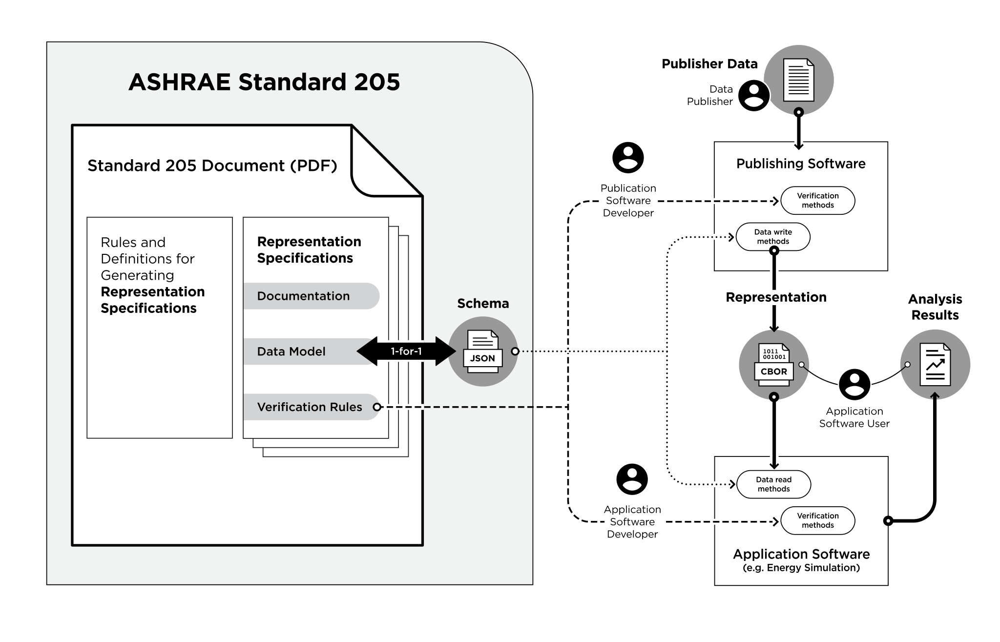

ASHRAE Standard 205P: Representation of Performance Data for HVAC&R and Other Facility Equipment
Purpose
To facilitate automated sharing of equipment performance characteristics by defining data models and data serialization formats.
Scope
This standard applies to performance data for any HVAC&R or other facility system, equipment, or component.
About ASHRAE Standard 205P
ASHRAE Standard 205P defines common data models and serialization formats for facility equipment performance data needed for engineering applications such as energy simulation. The formats allow automated exchange among data sources (manufacturers), simulation models, and other engineering applications. The formats and procedures specified in the standard are developed by SPC (Standard Project Committee) 205 under ASHRAE and ANSI consensus processes. SPC-205 membership includes equipment manufacturers, application software developers, and engineering practitioners.
Review copies of Standard 205P are available until July 29, 2020 at ASHRAE’s online review portal.
Standard 205 defines the term representation to mean a Concise Binary Object Representation (CBOR) file conforming to a JSON schema defined by a human-readable (text) document called a representation specification. Representation specifications are included in Standard 205P appended as an open-ended set.
Standard 205 structure and application can be visualized as follows:

This web site hosts supporting material for each representation specification, including:
-
JSON schema files are the software-readable equivalent of the data model portion of each representation specification. The files are a normative portion of Standard 205.
-
Examples files provide illustrative examples of each representation. Several file formats are provided.
-
XLSX templates can be downloaded, populated by hand, and then process with Toolkit 205 procedures to convert to a standard CBOR representation.
All representations have common structures and elements. An open source project, open205, is underway to provide software components for use by data publishers and application developers.
SPC 205 is developing representation specifications for additional equipment types. These will be published in future revisions of the standard.